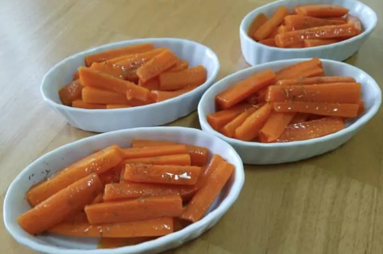

How to Make Glazed Carrots

For all my vegetarian folks out there who aren't vegan.
Description: Cook this if you don't like meaty things or want to watch your health somewhat but not too much (the ingredients include butter after all). I like the simplicity of this recipe.
So here's what you'll need:
- Carrots: Look for firm, plump, bright, and smooth carrots.
- Butter: You'll need about ¼ cup butter to make these caramelized carrots.
- Brown sugar: You can use light or dark brown sugar.
- Seasonings: These glazed carrots are simply seasoned with salt and ground white pepper.
If you're ready to cook, here's how you do it:
- Cook the carrots: Place the peeled and cut carrots in a saucepan, cover with water, and bring to a boil. Reduce the heat and simmer until the carrots are tender. Drain.
- Glaze the carrots: Melt the butter in a saucepan, then add the sugar, salt, and pepper. Add carrots and toss until well-coated.
- Put in an air-tight container once the carrots have cooled and store in the frigde for up to four days.